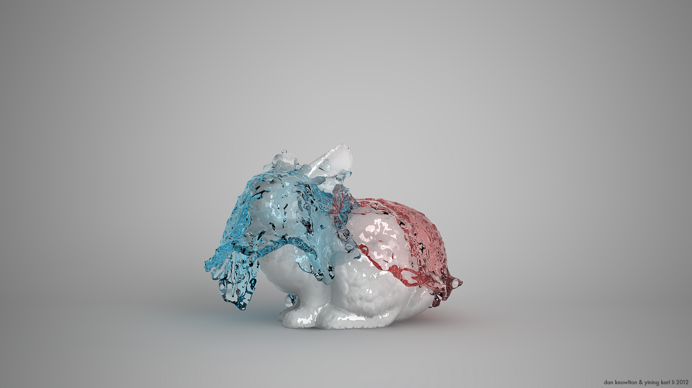

Multiple Interacting Fluids
A Semi-Lagrangian fluid simulator supporting multiple fluids, in collaboration with
Dan Knowlton

A frame from our simulator of a simulation involving a red and blue liquids cascading over the Stanford Bunny. All simulation work was done entirely with our simulator, rendering was done with Vray.
Overview
For our spring 2012 CIS563: Physically Based Animation final project, my friend Dan Knowlton and I developed a liquid simulator, nicknamed "Project Chocolate Syrup". Based on the paper Multiple Interacting Liquids by Losasso et al, our simulator is capable of simulating multiple liquids with various properties interacting with an environment and with each other. Our system utilizes some base code (listed below), but has been heavily modified, customized, and extended to fit the needs of this project. This project is written entirely in C++.
Base Code
Our project utilizes base code from the following sources:
1. Christopher Batty's Fluid3D framework, available on Github.
2. Christopher Batty's SDFGen OBJ to signed-distance-field convertor, available on Github.
3. Paul Bourke's Marching Cubes example, available here.
Features
Semi-Lagrangian Fluid Simulation: The simulation works in a semi-lagrangian fashion by advecting particles through a MAC grid structure and solving fluid states using a pre-conditioned conjugate gradient solver much like the one described in Robert Bridson's 2007 SIGGRAPH Fluid Simulation Course Notes.
Multiple Liquids: Support for simulating an arbitrary number of distinct liquids simultaneously against both each other and solid objects in a scene.
Level-Set Fluid Representation: The simulator represents the combined fluid surface using level sets built from the particle system.
Incompressability: Supports incompressible liquids by tracking and resolving overlapping particle positions.
Viscosity: Each liquid in the simulation can have its own viscosity settings, allowing for anything from water to toothpaste to be simulated.
Modified Particle Level-Set Method: To extract OBJ meshes from level-sets, we implemented a modified version of the Particle Level-Set Method. Our modified method works by moving helper particles through the level-set to find the liquid surface boundary, and then using the helper particles to create an up-sampled version of the level-set that is then converted to a mesh through marching cubes.
Scene Loading: Uses a custom scene format defining geometry, simulation boundaries, liquids, and liquid properties.
OBJ Mesh Import: Supports importing OBJ meshes and simulating liquids against OBJ mesh objects and boundaries defined by OBJs. Starting liquid volumes can also be defined by OBJs.
OBJ Mesh Sequence Export: Supports exporting the simulation as an OBJ mesh sequence suitable for use in Maya or any other 3D modeling/animation package.
Architecture: Fully cross platform, compiles on OSX and Windows without modification and without external dependencies aside from the C++11 Standard Library itself. Internally includes GLM and stb_image for some linear algebra functions and for image output. Multithreaded using OpenMP.
Interface: Includes a live OpenGL preview mode build using GLUT that displays the simulation as it progresses, with a moveable camera. Images from the live preview can be output alongside OBJ meshes.
Selected Images and Videos

Another frame from our simulator of a simulation involving a red and blue liquids cascading over
the Stanford Bunny. All simulation work was done entirely with our simulator, rendering was done with Vray.
Two liquids interacting with a mesh of the Stanford Bunny, brought into Maya from our simulator and rendered out with Vray. The two liquids have equal starting volumes and identical viscosities.
An early test of bringing fluid meshes into Maya for final rendering. Depicts a red liquid dropping into a wineglass.
Three tests demonstrating viscosity inside of our simulator. The first test demonstrates two viscous fluids resisting mixing with each other. The second test demonstrates a highly viscous fluid behaving similarly to a deformable solid body. The third test demonstrates two less viscous fluids flowing on top of each other.
Using the Stanford Dragon as a starting fluid volume. The mesh reconstruction system we used in this video predates our current modified particle level-set method based system and instead uses a standard marching cubes approach.
OBJs can be loaded in and then converted into signed distance fields which can in turn be used as any other sort of bounding volume. Here we show this functionality by filling a cow with liquid.
Planned Future Improvements
Although the class that this project was originally developed for has ended, we are planning to continue development with the following features:
Bouyancy: Support for fluids of differing densities interacting through bouyancy is planned and currently a high priority.
Better Mesh Reconstruction: Implementing the full particle level-set method is being considered
Betted Interaction: Although the current system includes a live preview mode, setting up the simulation system is still quite cumbersome and requires some scripting and coding. We hope to make simulation setup smoother down the road.
Additional Fluids: We hope to add additional fluids such as smoke to the system in the future, but this feature is currently a low priority.
Various Bugfixes: Currently some small glitches with the simulator exist, such as inverted normals in exported meshes. Fixing these problems is currently a high priority.
Maya OBJ Sequence Importing Tool: We developed a simple utility for importing OBJ sequences to Maya, which we aim to release publicly once we have a chance to polish it a bit more.
Animated Scene: Support for animating components of the scene and boundaries for liquids to interact with is planned.
Acknowledgements
This project would not be possible without the guidance of Dr. Joseph T. Kider, the instructor for CIS563 in the spring of 2012. We would also like to thank CIS563 TAs Tiantian Liu and Peter Kutz. Friends Gabriel Leung, Yui Suveepattananont, Gianni Chen, Xing Du, and Jason Merrin all acted as sounding boards for various ideas and discussed ideas, as well as joined us in late night coding sprints. Our project would not have been possible without the work of Robert Bridson, Christopher Batty, Ronald Fedkiw, and Frank Losasso. Finally, and most importantly, I have to thank Dan Knowlton for being a brilliant partner on this project.
Project Blog Posts
Our progress updates for Project Chocolate Syrup were posted to our project development blog, Project Chocolate Syrup: Simulating Multiple Interacting Fluids. The following posts detail the development of this project. Posts are listed starting with the most recent:
Resources
In the process of building our simulator, we have drawn upon the following papers, books, and articles. They are listed in no particular order.
Multiple Interacting Liquids: The core basis of our entire project describing methods for simulating multiple liquids interacting with each other, by Frank Losasso et. al.
SIGGRAPH 2007 Fluid Simulation Course Notes: An extremely comprehensive set of notes detailing semi-lagrangian based fluid simulation, by Robert Bridson and Matthias Muller-Fischer.
Fluid Simulation for Computer Graphics: The go-to reference book for fluid simulation, by Robert Bridson.
A Fast Variational Framework for Accurate Solid-Fluid Coupling: A paper describing methods for fluid-solid interactions, by Christopher Batty.
A Hybrid Particle Level Set Method for Improved Interface Capturing: Describes the particle level-set method, by Douglas Enright, Ronald Fedkiw, et. al.
Polygonising a Scalar Field: A description of the marching cubes algorithm, by Paul Bourke
Preconditioner Wikipedia Article: An article summarizing how mathematical preconditioners work.
Viscosity Wikipedia Article: An article describing the physical and mathematical principles of fluid viscosity.
{kind=link}